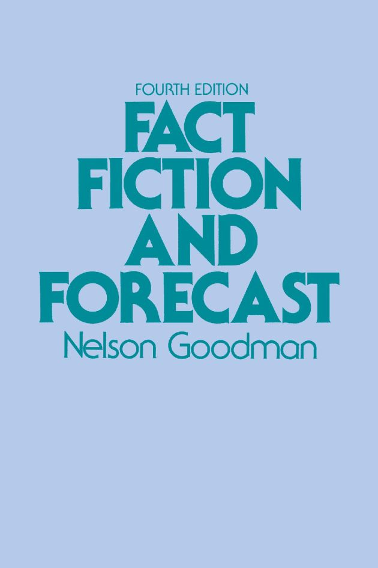
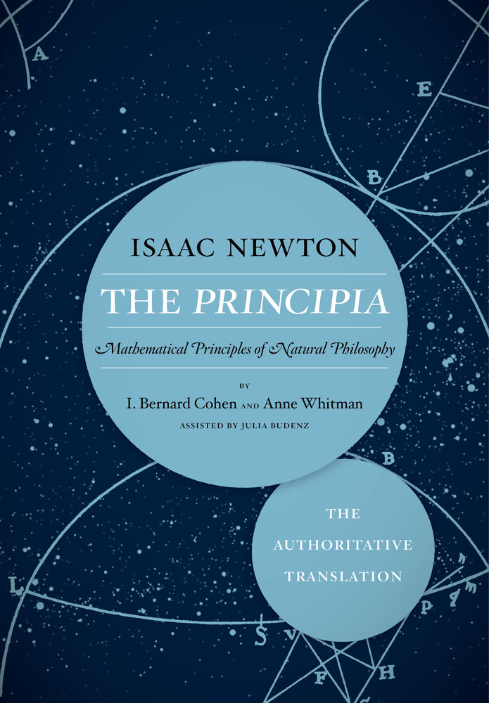
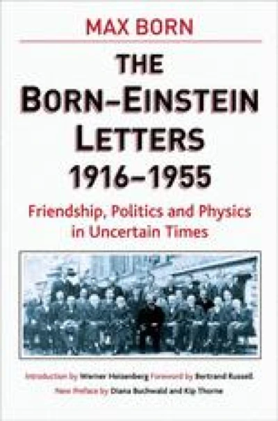

24:23 · 5 OPERE
Il pensare della scienza
Il filo del discorso
Il contributo propone di guardare alla scienza come a un’attività di pensiero, interrogandone metodi, condizioni e limiti. Dr Divago prende le mosse dalla formula heideggeriana secondo cui la scienza non pensa, ma rinvia la sua interpretazione a un discorso più ampio. La ripetibilità degli esperimenti e gli esempi della caduta dei gravi introducono il rapporto fra risultati e condizioni nelle quali si ottengono. Il riferimento a Goodman porta poi al problema dell’induzione: su quali basi si estendono le conoscenze oltre i casi già osservati? Il relatore contrappone la ricerca scientifica a un sistema di risposte rigide e discute il ruolo delle prove, dei modelli e della previsione statistica, includendo un passaggio sul cambiamento climatico. La meccanica quantistica, la relatività e i richiami a Gödel e Turing sono adoperati per mettere in questione un’immagine monolitica del sapere. Non tutte le spiegazioni tecniche fornite nel video sono però corrette: distinguere i limiti di una teoria dalla sua arbitrarietà è necessario anche per seguire il tema filosofico proposto. Nella parte finale, il discorso torna alla separazione fra discipline: i Principia di Newton e le lettere di Einstein e Born accompagnano l’auspicio di una formazione che tenga insieme competenza scientifica, filosofia e letteratura.
I libri nel discorso

Che cosa significa pensare?
Identificazione probabile
Copertina: SugarCo · Tasco · edizione di riferimento
La frase La scienza non pensa richiama probabilmente il nucleo di Was heißt Denken?, ma il titolo non è pronunciato e l’esegesi è rinviata.
Passaggio 0:30 ↗ · Fonti e libro ↗
Fact, Fiction, and Forecast
Copertina: Harvard University Press · quarta edizione, 1983 · prefazione di Hilary Putnam
Immagine autentica dell’opera, controllata visivamente; l’edizione di riferimento non è attribuita al filmato.
Nelson Goodman e il titolo italiano Fatti, ipotesi e previsioni sono pronunciati; la forma inglese è deteriorata dall’ASR.
Passaggio 4:46 ↗ · Fonti e libro ↗
Philosophiae naturalis principia mathematica
Copertina: University of California Press · 2016 · traduzione Cohen e Whitman, con Julia Budenz
Copertina editoriale autentica della brossura The Principia: The Authoritative Translation, ISBN 9780520290747. Il segnaposto dell’edizione rilegata non è stato incluso nel sito. La traduzione inglese si basa sulla terza edizione latina, 1726; l’opera fu pubblicata originariamente nel 1687.
Newton e i Principia Mathematica sono nominati nel racconto del rapporto con Locke.
Passaggio 20:57 ↗ · Fonti e libro ↗
The Born–Einstein Letters, 1916–1955
Identificazione probabile
Copertina: Palgrave Macmillan · copyright 2005 · prefazione di Diana Buchwald e Kip Thorne
Immagine autentica dell’opera, controllata visivamente; l’edizione di riferimento non è attribuita al filmato.
Richiamo alle lettere pubblicate di Einstein a Max Born; titolo ed edizione non annunciati, identificazione della raccolta probabile.
Passaggio 22:55 ↗ · Fonti e libro ↗
Amleto
Copertina: BUR · 2022 · traduzione di Rocco Coronato · illustrazioni di John Austen
Immagine autentica dell’opera, controllata visivamente; non identifica l’edizione usata nel video.
Amleto è nominato come esempio degli interessi letterari degli scienziati, senza un passo o un’edizione determinati.
Passaggio 23:16 ↗ · Fonti e libro ↗Minutaggi ricavati da testi automatici, da riascoltare. Le identificazioni probabili sono segnalate accanto ai libri.